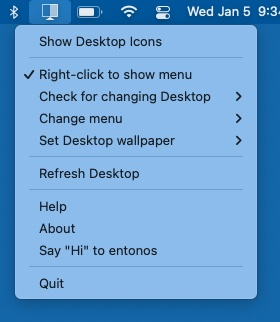

Welcome to Hide Icons

Hide Icons effectively hides your Desktop icons. Ideally it should be placed in the Applications folder. It can be specified as a Login Item in your user account as a nice way to have the application run automatically.
1) Use
Hide Icon is used two ways:
 

Notice the default key combination (this can be changed, see below).
 
 
Show Desktop icons/Hide Desktop Icons toggles showing or hiding the Desktop icons.
If Right-click to show menu is enabled, then clicking on the the menu ( ) will toggle Show/Hide Desktop icons and right-click will open the menu. The default is the opposite behavior.
) will toggle Show/Hide Desktop icons and right-click will open the menu. The default is the opposite behavior.
If Check for changing Desktop is set to anything other than Never, Hide Icons will update the Desktop every time interval specified. This allows for changing Desktops.
Change menu allows you to hide the menu item (replaces it with a blank icon) or to completely remove the menu from the menu bar. For the latter case, one can still use Services to toggle showing/hiding icons. To get the menu back, simply re-run Hide Icons.
Set Desktop wallpaper allows you to use either the actual Desktop wallpaper or to use a custom color wallpaper. Either for all Desktops or for individual Desktops. If you have either more than one display or more than one Space, you have multiple Desktops.
Refresh Desktop forces an update of all Desktops across all displays and Spaces. This option will also cause Hide Icons to forget which Desktop goes with which Space (see below). This is essentially a restart of Hide Icons.
2) Services
Hide Icon can be controlled by Services. You may have to got to >System Preferences…>Keyboard, select Shortcuts, select Services on the left and check Toggle Desktop Icons on the right. You can also select your own shortcut.
 

If Toggle Desktop Icons is not present, make sure Hide Icons is in the Applications folder and you will need to logout/login for macOS to see the Service.
3) Where is the menu (
)?
Simply run Hide Icon again. The menu is not present if Hide Icon was started as a Service or
 >Change menu>Remove menu was chosen.
>Change menu>Remove menu was chosen.
If command key (⌘) is held when Hide Icons starts, the user defined preferences are overwritten with default preferences- useful if you chose a preference set you don't like.
4) Requirements
Hide Icon was written in Swift with Xcode 14.2. It was compiled to support macOS 10.13 (High Sierra) through 13.x (Ventura). Versions before 10.14 (High Sierra) can not detect Dark Mode switching.
5) Details
Hide Icon doesn’t touch the Desktop icons. It simply takes a picture of the Desktop (without the icons) and displays this picture just above the real Desktop giving the illusion that the icons have vanished. THEY HAVE NOT. If you open a Finder window, you can easily navigate to Desktop. From there you can add, remove and manipulate items on the Desktop. You must either Show Desktop Icons or quit Hide Icons to have the usual Desktop back.
If Check for changing Desktop is set to anything other than Never, then for every time interval specified the picture of the real Desktop is taken to allow for time varying Desktops. Similary, on macOS 10.14 and above, changes in Appearances (e.g. Dark Mode) are immediately reflected.
If you are using multiple Spaces (with any number of displays), Hide Icons doesn't actually know which Desktop goes with which Space. However, once you visit that Space, Hide Icons will remember that Desktop goes with that Space. Until it does, switching Spaces may temporarily display the wrong Desktop. Selecting Refresh Desktop will force Hide Icons to forget these correlations.
Set Desktop wallpaper will determine This Desktop according to where the last mouse click was performed. This may cause some difficulties if Displays have separate Spaces is unchecked in System Preferences...>Mission Control. Simply drag the Color Panel to the Desktop of the Space which does not have a menu bar and then select a custom color for wallpaper. Finally, the menu bar is always tinted according to the actual Desktop. You can turn off tinting by enabling System Settings/Preferences...>Accessibility>Display>Display>Reduce transparency.
On macOS 11.6.+ (Big Sur), the Desktop icons will flash when changing Spaces. This is a bug introduced by Apple and currently no workaround is known. Monterey or earlier versions of macOS do not exhibit this behavior.
6) FAQ
The incorrect Desktop is being displayed! As mentioned above, Hide Icons does not know which Space corresponds to which Desktop (there are no public APIs that Apple provides for this information) and therefore it tries to learn which Desktop corresponds to which Space. This learning may go wrong. If it does, you can either quit and restart Hide Icons or you can select Force Desktop refresh from the menu.
Desktop is black! This is similar to above. Hide Icons got confused which Desktop goes with Space. In order to ensure the Desktop icons are always hidden, Hide Icons automatically makes a default black Desktop in case it runs into problems. If the black Desktop is showing, you know it ran into problems. Solution is the same as above.
Why does either of the above happen? This turns out to be rather subtle. One way for this to happen is rapidly switching Spaces. Essentially some core graphics routines may have some delay updating information that Hide Icons needs to make assignments between Spaces and Desktops. If that information is not correct, then we can run into problems. Hide Icons tries to validate the data returned from the graphics routines before using it and if there is a problem it polls those routines until the data is acceptable and if during that time the Space is changed, Hide Icons can get confused. This should all happen in less than a second, but sometimes that is too slow.
Sometimes I see the Desktop with gray/white areas... To be honest, I don't know why this happens. It shouldn't. Somehow the graphics routines are not redrawing completely. Seems more likely to happen when the machine is under heavy load or there are many high resolution displays connected. Ultimately, it's an Apple bug.
How is this different that others apps? Well, first it's free- both in price and code. Second, it works for any number of Desktops and Spaces. Third it tries to memorize which Desktop and Space go together so transitions between Spaces are smooth once that correlation is found. Regardless, you should use whatever app works best for you, hopefully Hide Icons will be that app.
7) Warning/Disclaimer/Licenses
Using this application won’t make you more attractive or get you rich. Regardless, Hide Icons will never affect your Desktop icons.
I wrote this for my personal use. I find it useful. I know others have also found it useful too. It’s free and you can give the distribution (i.e. as you got it) to anyone you want. You can’t sell it, though. And if you modify the script and don’t give me credit for the original, you’re simply evil (and are violating this license).
G.J. Parker- http://www.parker9.com (Entonos)